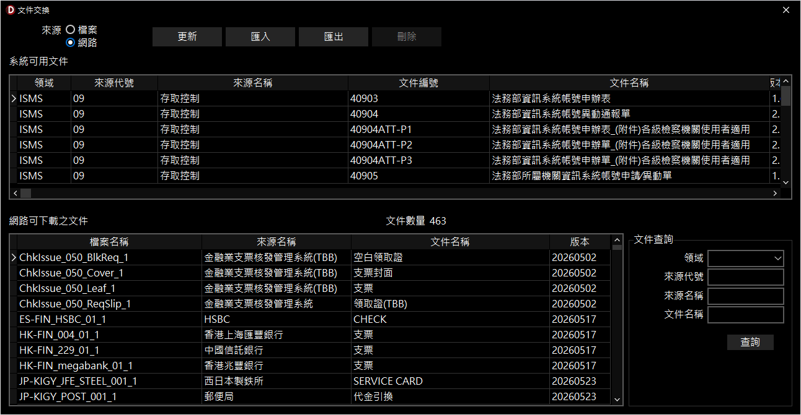

文件交換
文件資料處理可以自行設定成一套處理流程；如果有現成的文件設定檔，直接引用就能省下大量時間。「常用 > 文件交換」就是用來引用、匯出及刪除文件設定檔的地方。
引用文件設定檔有下列 2 種方式。
檔案匯入
- 取得文件設定檔（.zip），放置於 InfoRec 資料夾內。
- 「常用 > 文件交換」按「匯入」，選取文件設定檔。
官網匯入
- 「常用 > 文件交換」的「來源」選「網路」，等待 3～5 秒，即可取得可下載的文件清單。
- 選取文件後按「匯入」，或直接雙擊該文件。
備註：
- 文件較多時，可先依領域、來源代號、來源名稱或文件名稱查詢，再選取匯入。
- 官網匯入須具備有效註冊。
匯出：將「系統可用文件」中的文件匯出，進行備份或提供他人使用。
刪除：刪除不需要的文件設定檔（「來源」為「檔案」時才能刪除，網路清單僅供查看及下載）。
